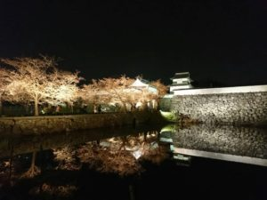
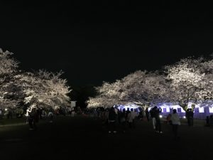

福岡城桜まつり
sakura information
公園内の桜も満開を迎えました！ 春の暖かな日差しの中の桜も、ライトアップされた夜桜も、 どちらも是非お楽しみ下さい！
【3/31開花情報:満開】  今日も天気がよく、皆さん公園内を散策してお花見を楽しんでいますね。場所によっては満開の木々もありますが、園内全体では七分?八分咲きといった感じでしょうか。 今日の夜桜も楽しみです。皆様のお越しをお待ちしております。 
昨年好評だった大道芸パフォーマンスが今年も登場。鴻臚館広場、上之橋の他、新たに西広場もパフォーマンススポットに加わりました。よりすぐりのストリートパフォーマーたちが驚きの技を次々に披露します。